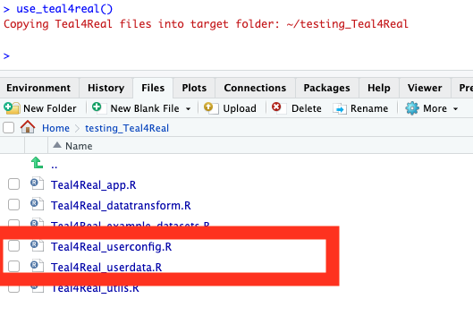
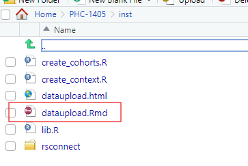
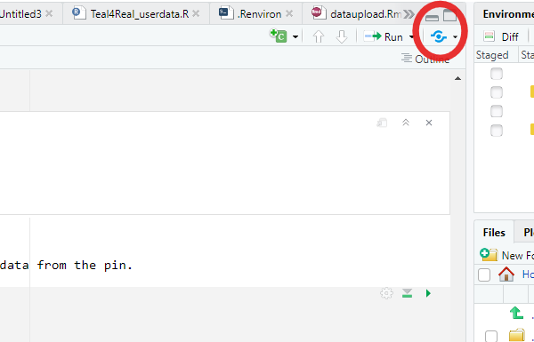
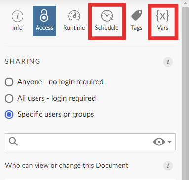
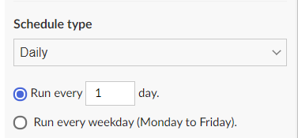

Data Upload
data_upload.RmdThis article describes a possible way to use Teal4Real on your own dataset by uploading the data to Posit Connect. However, this is not absolutely necessary - you may also just call some data-generating R code from within
Teal4Real_userdata.Rand leave caching to Teal4Real by settingupdate_cache = TRUEinTeal4Real_userconfig.R. as described in the previous article. This will mean that your data is generated the first time the app is run, and then cached for future use.
How to use Teal4Real on your own analysis dataset!
If you want to use Teal4Real on your own analysis dataset, you’ll have to look through all the files with “user” in the filename (Teal4Real_userconfig.R and Teal4Real_userdata.R), and follow the explanations in the comments.

Step 1: Connecting to the Data!
Create a new script called something along the lines of create_context. In this script we will include how to connect to your data using the Rochedata package. (Please note there are other methods to do this, however this one is one of the easiest).
In this step we must create the data as an object. You must source this in the Teal4Real_userdata.R file like this: source(“create_context.R”).
Here is an example, please replace with your own ARD Schema name (if you have one) and call the edm object a name of your choice.
ard_schema_name_edm <- "flatiron_edm_ansclc_ard_2023_11"
schema_name_edm <- "flatiron_edm_ansclc_sdm_2023_11" #Replace with own Schema name
edm <- RocheData::get_data(data = "flatiron_edm_ansclc") #Assigning the data to Object called edm
#> → Connecting to MDHmeta API and saving to session cache...
#> → Getting MDH datasets info...
#> ✔ Done.
#> ✔ MDHmeta connections saved in the session cache.
#> → Reading connections from the package config file...
#> ✔ Done.
edm$connect()
#> Connecting to the database: 'flatiron_edm_ansclc'...Step 2: Set Up Your Cohort!
We now want to personalize this Teal4Real app to the cohort you are interested in. Here you will work on the Teal4Real_userconfig.R file and define your endpoints.
Let’s create a new script called something along the lines of create_cohort. Here we will create our cohort as a function.
Here we will turn our data into one table by left joining any variables.
This is a customised file where you create your cohort!
get_broad_cohort <- function(db_obj, schema_name, ard_schema_name, use_reporteddate = T)
create_tbl <- function(database_schema, table_name, .db, ...) {
tbl(.db, in_schema(database_schema, table_name))
}Step 3: Set up your Pin!
This is an optional step however may help separate the whole data process from the app logic. This may substantially improve the run time of the app.
First create a markdown file in an
instfolder. This will serve as a scheduled report for uploading the data to a pin on Posit Connect.Put all the files with functions that are used to create the cohort data in the
instfolder and source these files in the markdown file. In markdown file: call the following librarys magrittr and pins, and source your “create_context.R” and “create_cohorts.R” files.
Also call the main data function, connect to board and save the output to a pin.
Here is an example of what your markdown file should look like (where Impower_data is my pin name): In this example I have a separate pin for the data and the data date (extracted from the schema).
# cut_date <- pull_cut_date("flatiron_edm_ansclc_sdm_")
# ard_schema_name_edm <- paste0("flatiron_edm_ansclc_ard_", cut_date)
# schema_name_edm <- paste0("flatiron_edm_ansclc_sdm_", cut_date)
# board <- pins::board_connect(
# auth = "manual",
# server = "https://connect.apollo.roche.com/",
# key = Sys.getenv("CONNECT_API_KEY")
# )
# data_date <- pins::pin_read(board,"RAJAR6/Impower_data_date")
# if(data_date!=cut_date){
# cohort_data <- tryCatch({
# get_broad_cohort(
# db_obj = edm,
# schema_name = schema_name_edm,
# ard_schema_name = ard_schema_name_edm,
# use_reporteddate = T
# ) %>%
# include("Met dx in 2016 or later", year(met_dx_date) >= 2016)
# },
# error = function(e) {
# e
# })
# if (!inherits(cohort_data,"error")){
# board %>% pins::pin_write(
# x = cohort_data,
# name = "RAJAR6/Impower_data")
# board %>% pins::pin_write(
# x = cut_date,
# name = "RAJAR6/Impower_data_date")
# }
# }- Now in your
Teal4Real_userdata.Rfile add this syntax code to pull the data from the pin.
cohort_query <- function(){
message("Pulling data from pin...")
board <- pins::board_connect(
auth = "manual",
server = "https://connect.apollo.roche.com/",
key = Sys.getenv("CONNECT_API_KEY")
)
pins::pin_read(board, "RAJAR6/Impower_data")
}- To schedule the report automatically you need to deploy the report to Posit Connect with source code and schedule it in a custom way. Here you may want to custom it to Use the blue button in the top right to deploy the r markdown. Follow the steps and ensure that you the markdown with source code.

First time, it may crash. It is important to still deploy it even if it crashes. The reaosn for this will usually be due to needing to input environment variables. So once deployed,on Posit Connect directly, you should see the Vars feature where you can input your username and password.
Here you will also find the Schedule feature where you can schedule how often you want this markdown to knit in the background, so you do not have to carry out this step. (I have chosen to do this daily). Please note, after making changes to your cohort, it is important you knit this markdown before you run your app, so that the changes are made.

